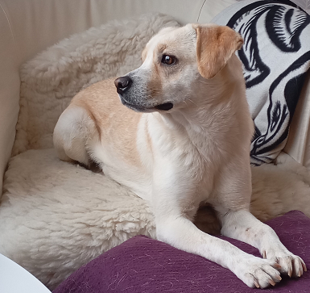
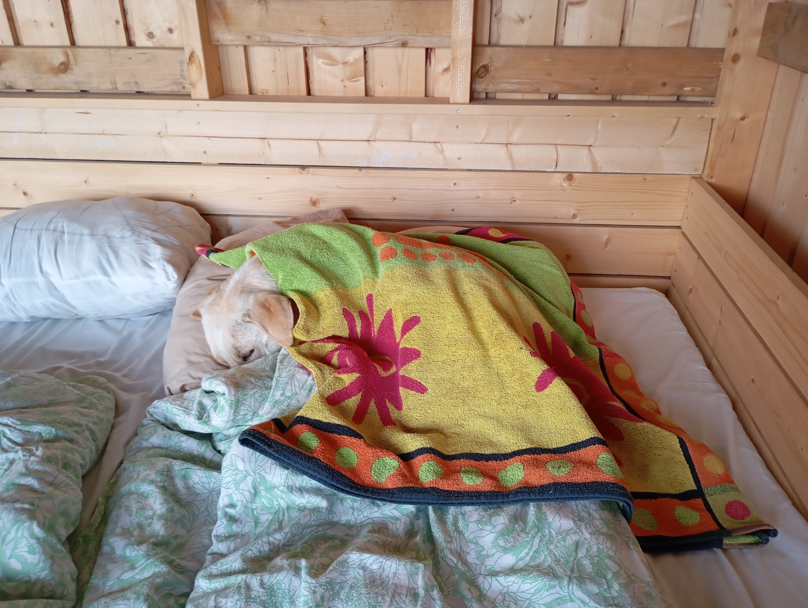
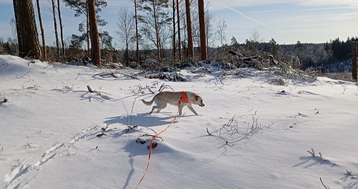
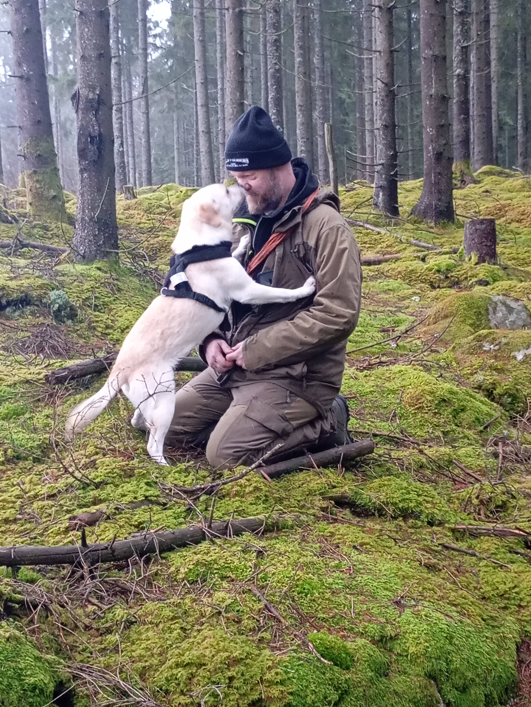

Sol
Flyttade till Sverige December 2025

Buna ziua!
Nu har jag bott i Sverige i 1 månad och jag kommer knappt ihåg mitt språk gamla längre.
Men Mulţumesc (Tack) kommer jag ihåg.
Tack till Kicki och Marianne som hjälpte mig att komma hit.
Jag bor hos två jättesnälla 2-beningar och en helt okej annan 4-bening. Här har jag fått en egen jätteskön filt framför en varm kamin. Jag har till och med fått en egen säng i gästrummet - även om jag ibland måste dela min säng med husse på eftermiddagsluren. Jag har fått börja springa fritt i skogen - och oj vilken stor skog det är! Jag hinner knapt nosa rätt på alla spännande dofter. Idag på promenaden hittade vi en död gris i skogen, det var sorgligt. Så nu har jag bestämt mig för att jag ska bli eftersökshund - så att fler felskjutna grisar inte behöver lida. Efter 2 timmars skogspromenad har jag nu landat i husses knä.


